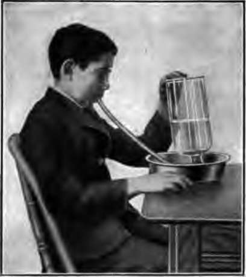
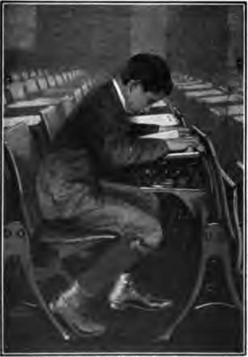
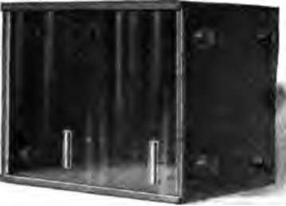
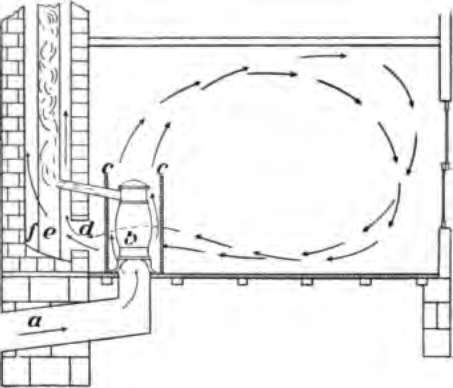

Chapter XI. Air And Health
Description
This section is from the book "The Human Body And Health", by Alvin Davison. Also available from Amazon: The Human Body and Health.
Chapter XI. Air And Health
Preventing Sickness Of The Respiratory System
About a quarter of a million of people die every year in our country from disease of the lungs and throat. A half million others are sick with some ailment of the respiratory system. Much of this misery is due to breathing air full of dust or other impurities. The dust of the street should be kept down by sprinkling. Floors should be oiled or treated with dust-killing substances before being swept. Dust irritates the tender lining of the air tubes and thus opens the way for disease. A damp cloth should be used in dusting furniture, because the dust and disease germs will stick to it and not fly about.
Fig. 70. Finding out how much the lungs will hold. The bottle full of water was turned upside down with its mouth under water in the pan. The boy blows through the rubber tube extending up into the mouth of the bottle and forces out as much water as possible.
From the inner surface of the nose and all air tubes stick out tiny hairlike projections called cilia. These millions of cilia are always waving up and down in such a way as to move any dust particles outward from the lungs. This keeps the air sacs from being filled up.
Exercising The Lungs
The lungs of a twelve-year old boy will hold nearly a gallon of air. By effort he can force out at one breath almost three quarts of this. In ordinary breathing, only about one pint comes out at each breath. Many of the air sacs are scarcely used at all and therefore they become weak and liable to disease. The chest instead of being full and round is flat or hollow in front.
Girls and boys should exercise their lungs several minutes each day, by taking in as much air as possible at one breath. They should breathe through the nose so that the air will be warmed and most of the dust caught by the cilia. Swinging the arms back and forth above the head, at the side, behind the back, and in front of the body, strengthens the lungs and wards off disease. In sitting and walking one should hold the trunk erect and the shoulders thrown back, so that air can reach all parts of the lungs.
Fig. 71. How the lungs are squeezed up so that many parts are not used and disease invited.
Fig. 72. A box with two candles and glass front for ventilation experiment. Four corks are in either end for windows. The removal of one cork does not give air enough to permit the candles to burn, but two corks out give sufficient air only when they are at the same end of the box and one above the other.
Tight Clothing And Breathing
Bands or other clothing worn tight around the waist or chest do not allow the walls of the chest to expand to their fullest extent. For this reason, the lungs cannot be filled completely with air, and the breathing becomes short and labored. The unused parts of the lungs may become diseased. The clothing about the waist should always be loose, especially in children, and the weight of the garments should be supported by straps over the shoulders.
Need Of Supplying Fresh Air In A Room
Since-each person uses a pint of air at every breath, and breathes eighteen times per minute, the air in a room soon becomes foul. It must therefore be exchanged for fresh air. This exchange of foul for fresh air in a room is called ventilation. To keep the air of a room pure, twenty cubic feet of fresh air must flow in every minute for each person present.
Impure Air Causes Disease
About 150,000 persons die of tuberculosis in the United States every year. Many more are sick with the disease. One of the chief causes of this illness is impure air. The air of any room containing one or more persons becomes impure in a few minutes, unless some way is provided for the fresh air to enter.
Fig. 73. Ventilating a rural school. Cold air flows up through the pipe a, and is heated by stove b, enclosed in sheet iron c. The smoke stack e warms the air about it in brick flue f and thus draws the foul air through the opening d.
Some years ago a tribe of Indians in Iowa, who were in good health, were persuaded to leave their tents and dwell in small houses. As a result of the impure air in the poorly ventilated houses, about one half of the Indians now have tuberculosis, and the tribe is rapidly dying off from this disease. Living in impure air weakens nearly all organs and prepares them for disease. Schools that are well ventilated have less than one half as many pupils absent on account of sickness as those with poor ventilation.
Ventilation And Colds
The air in rooms not well ventilated is usually very dry. This causes the sweat to pass off from the body rapidly and carry with it heat, so that the room seems cold when it is really of a proper temperature.
A room with pure air at sixty-eight degrees will feel warmer than a room with impure dry air at seventy-two degrees. The change from the dry heated air to the moist cool air out doors is a common cause of a cold in the head, often called catarrh. In fact the over heated and poorly ventilated room is a frequent cause of all sorts of colds.
How To Ventilate The School Room
Many children are made tired and sick, and the teacher cross and unfit for duty by the impure air of the schoolroom. All school-houses should have a regular system of ventilation but many have not. Windows pulled down from the top give poor ventilation, because the impure air is heavy and near the floor.
Continue to: